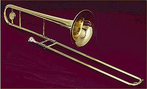

트롬본(Trombone, 독일어: 트룸본 )은 두 개의 U자 모양의 관을 서로 끼워 맞추어서 만들어져, 컵 모양의 마우스 피스에 입술을 진동시켜 소리를 내는 금관 악기의 한 종류이다. 음의 조절은 슬라이드로 하게 된다.
트롬본의 명칭은 본래 이탈리아어로서 '큰 트롬바(Tromba, 트럼펫)'를 의미한다. 이 악기는 트럼펫보다 낮은 음역을 담당하는 금관 악기이며, 발음원리는 트럼펫 등과 같다. 오늘날 쓰이고 있는 것은 변음장치의 다름에 따라 슬라이드 트롬본과 밸브 트롬본의 2종이나 슬라이드식이 역사도 깊고 오랜 것으로 현재는 보다 일반적이다. 슬라이드식은 마우스피스, 슬라이드, 벨의 3부분으로 되어 있다. 마우스피스는 트럼펫의 것을 닮은 조금 대형이며 굽은 캡을 가진 것이 보통이지만, 프랑스계에서는 호른과 같은 형의 것도 쓰고 있다. 슬라이드는 내관과 외관으로 되어 있으며, 모두 똑바른 부분이 주체이나 U자관이라 하는 만곡부(灣曲部)를 가지고 있다. 외관을 내관에 U자가 서로 맞보게 끼워 슬라이드시킴으로써 관의 길이를 바꾼다. 이 원리는 이미 15세기 초에 고안되어 있었고, 19세기 초엽, 오늘날 금관악기 일반에 채용되고 있는 밸브 장치가 발명될 때까지 슬라이드 트롬본은 반음계적 변화음을 자유로이 연주할 수 있는 몇 안 되는 금관악기였다. 벨은 직경이 가장 작은 것으로 16.5cm에서 가장 큰 것으로 25.4cm까지 여러 가지 크기의 것이 있으며 각국의 습관에 따라 다르다. 대체로 벨이 클수록 관도 굵으며 그 차이는 음빛깔의 상위로 나타난다. 재질은 보통 놋쇠이다. 다만 트롬본이라고 하였을 때에는 내림나조인 테너·트롬본을 말하며 그 음넓이는 마음에서 바2음까지이다. 보다 낮은 페달(pedal)음도 악기의 성능이나 주자의 기교에 따라 연주할 수는 있지만 보통 쓰이지 않는다. 페달음이란 배음계열의 바탕음으로서 금관악기에 있어서 이론적으로 취주 가능한 최저음을 말한다.